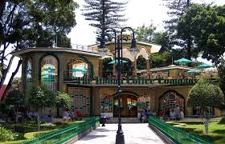

Hacia el año 1100 A.C. el valle de Atlixco se hallaba ocupado por pobladores de origen Teochichimeca, Chichimeca y Xicalancas que bajo el dominio de la gran Tenochtitlan, se asentaron primeramente al poniente del cerro de San Miguel, hoy Solares Grandes.
Estos primeros pueblos fundaron así Quaquechollan (Águila que huye) y que tiempo después llamaron Acapetlahuacan, “Lugar de división del señorío”. Su posición geográfica hizo que fuera escenario de luchas entre los diversos grupos indígenas que estaban asentados en los alrededores.
La nueva población que fundaron fue también llamada Quauhquechollan, pero para confundirla con su antiguo asentamiento la denominaron Huehue Quauhquechollan, es decir la “antigua” o la “vieja” Quauhquechollan A la llegada de los españoles, el poblado indígena que existía era Acapetlahuacan.
Al crecer la comunidad española, se realizaron las gestiones necesarias ante la Corona para que se les autorizara la fundación de la Villa de Carrión. Don Pedro del Castillo Maldonado y Cristóbal Ruiz Cabrera fundaron la Villa de Carrión, hoy Atlixco, pasando a ser los primeros Alcaldes Ordinarios.
La fertilidad del Valle hizo que la Villa de Carrión pronto fuera una importante zona agrícola, convirtiéndose ya para principios de siglo XVII en el primer granero de la Nueva España lo que llamó la atención de órdenes religiosas como la de los franciscanos, agustinos, carmelitas, mercedarios, juaninos y la de las monjas clarisas, que llegaron hasta el valle para edificar sus conventos.



")
")


 1
1 2
2 3
3 9
9 12
12 13
13


")
 2
2 5
5 8
8 9
9.jpg)
.jpg)